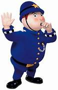

Noddy is a fictional character created by English children's author Enid Blyton. Noddy first appeared in a book series published between 1949 and 1963, il.oddy is kind and honest, but he often gets into trouble, either through his own misunderstandings or because someone, usually one of the naughty goblins Sly or Gobbo, has played a trick on him. He is very childlike in his understanding of the world and often becomes confused as a result. For example, in the first Noddy book, Noddy and Big Ears are building Noddy's house for one. Noddy suggests that they build the roof first, in case it rains. With no understanding of gravity or of the need for roof supports, this is perfectly logical to him. As the series continues, Noddy becomes wiser but without losing his charm and lovable naivety.
MR.PLOD

Mr. Plod (sometimes called PC Plod), the Toyland policeman. He has an uneven relationship with Noddy, who he thinks drives too fast and engages in other unwarranted behaviour. He has gone so far as to imprison Noddy at least once, and threatened him with imprisonment on other occasions. His catchphrase is "Stop, in the name of Plod!", as shown in Make Way for Noddy.